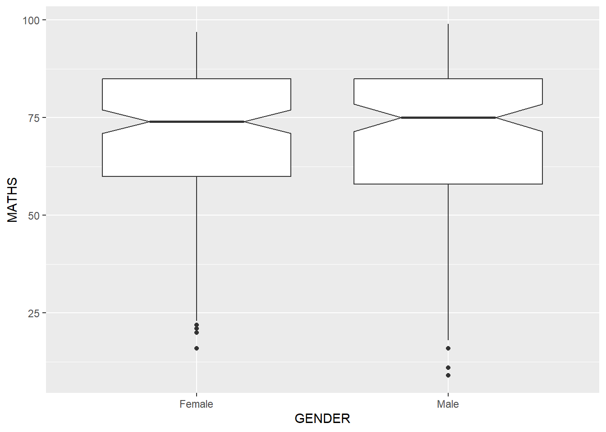
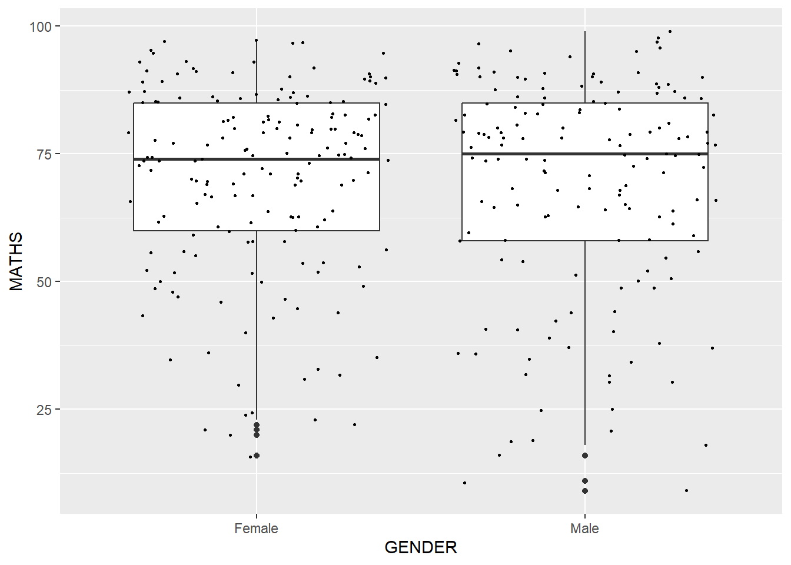
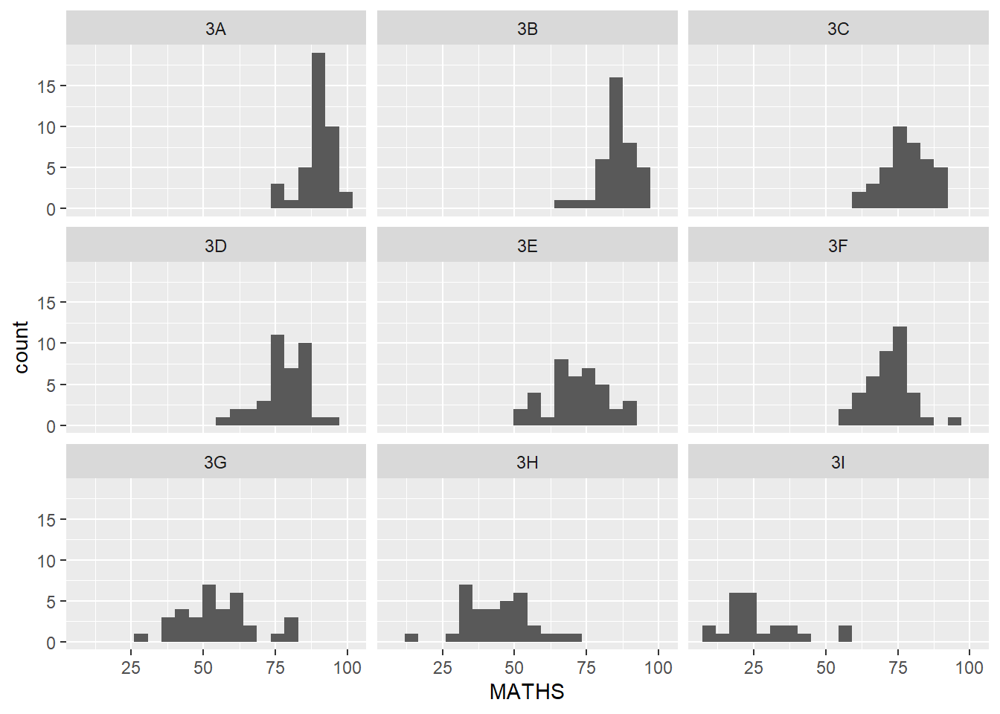

Show the code
pacman::p_load(tidyverse)[Updated charts with annotations and references on 16 Jan 2024]
In this hands-on exercise, we will learn about:
the basic principles of Grammar of Graphics;
the basic principles and essential components of ggplot2;
gain hands-on experience on using ggplot2’s components to plot statistical graphics based on the principle of Layered Grammar of Graphics; and
apply graphical elements provided by ggplot2 to create elegant and yet functional statistical graphics.
Before we start, let us ensure that the required R packages have been installed and import the relevant data for this hands-on exercise.
The code chunk below uses p_load() of pacman package to check if tidyverse packages are installed in the computer. If they are, they will be launched in R. Otherwise, pacman will install the relevant packages before launching them.
pacman::p_load(tidyverse)Note that pacman package has already been installed before using the above code chunk. If you have not yet installed pacman please install it via Rstudios’ “Tools” > “Install Packages” before using the above code chunk.
We use read_csv() function of readr to import the data, glimpse() of dplyr to learn about the associated attribute information in the dataframe, and summary() of base R to get the summary statistics of the data.
exam_data <- read_csv("data/Exam_data.csv")glimpse(exam_data)Rows: 322
Columns: 7
$ ID <chr> "Student321", "Student305", "Student289", "Student227", "Stude…
$ CLASS <chr> "3I", "3I", "3H", "3F", "3I", "3I", "3I", "3I", "3I", "3H", "3…
$ GENDER <chr> "Male", "Female", "Male", "Male", "Male", "Female", "Male", "M…
$ RACE <chr> "Malay", "Malay", "Chinese", "Chinese", "Malay", "Malay", "Chi…
$ ENGLISH <dbl> 21, 24, 26, 27, 27, 31, 31, 31, 33, 34, 34, 36, 36, 36, 37, 38…
$ MATHS <dbl> 9, 22, 16, 77, 11, 16, 21, 18, 19, 49, 39, 35, 23, 36, 49, 30,…
$ SCIENCE <dbl> 15, 16, 16, 31, 25, 16, 25, 27, 15, 37, 42, 22, 32, 36, 35, 45…summary(exam_data) ID CLASS GENDER RACE
Length:322 Length:322 Length:322 Length:322
Class :character Class :character Class :character Class :character
Mode :character Mode :character Mode :character Mode :character
ENGLISH MATHS SCIENCE
Min. :21.00 Min. : 9.00 Min. :15.00
1st Qu.:59.00 1st Qu.:58.00 1st Qu.:49.25
Median :70.00 Median :74.00 Median :65.00
Mean :67.18 Mean :69.33 Mean :61.16
3rd Qu.:78.00 3rd Qu.:85.00 3rd Qu.:74.75
Max. :96.00 Max. :99.00 Max. :96.00 From the above output, we note that exam_data has 7 columns:
ID is a unique identifier for students.
CLASS represents the class that the student is in.
GENDER tells us the student’s gender.
RACE tells us the student’s race.
ENGLISH is the score that the student got for English subject.
MATHS is the score that the student got for Mathematics subject.
SCIENCE is the score that the student got for Science subject.
There are 322 rows in total. For English, the minimum score (i.e., the lowest score gotten by a student) is 21, median is 70, and the maximum (or rather the highest score gotten by a student) is 96. For Mathematics, the lowest score gotten by a student is 9, median is 74 and the highest score gotten by a student is 99. For Science, the lowest score gotten by a student is 15, median is 65 and the highest score gotten by a student is 96.
It is good to check if there are any missing data in our imported dataset so that we are aware if there are any missing data at the onset and also decide how to manage the missing data subsequently.
exam_data %>%
map(is.na) %>%
map(sum)$ID
[1] 0
$CLASS
[1] 0
$GENDER
[1] 0
$RACE
[1] 0
$ENGLISH
[1] 0
$MATHS
[1] 0
$SCIENCE
[1] 0From the above result, we see that there are no missing data in exam_data.
Now that we have some idea of the data imported in, let us move to the next section!
Before we go into the details of ggplot2, let us understand the principles of Grammar of Graphics.
Grammar of Graphics, introduced by Leland Wilkinson in 1999, is a general scheme for data visualisation, which breaks up graphs into semantic components such as scales and layers. The grammar of graphics answers the question: “What is a statistical graphic?”.
Grammar refers to “the fundamental principles or rules of an art or science” (OED Online, 1989)
Essentially, Grammar of Graphics defines the rules of structuring mathematical and aesthetic elements into a meaningful graph, just like grammar in any language (e.g. English) tells us the rules to form coherent and meaningful sentences!
There are two principles in Grammar of Graphics, they are:
Graphics = distinct layers of grammatical elements; and
Meaningful plots through aesthetic mapping
A good grammar of graphics will allow us to gain insight into the composition of complicated graphics, and reveal unexpected connections between seemingly different graphics (Cox, 1978). It also provides a strong foundation for understanding a diverse range of graphics. Furthermore, it may also help guide us on what a well-formed or correct graphic looks like, but there will still be many grammatically correct but nonsensical graphics.
ggplot2 is an R package for declaratively creating data-driven graphics based on the Grammar of Graphics. It is also part of the tidyverse family specially designed for visual exploration and communication.
The R package, ggplot2 is an implementation of Leland Wilkinson’s Grammar of Graphics, and is developed by Hadley Wickham. Hadley’s layered grammar of graphics uses several layered components to describe any graphic or visualization. The figure below shows the seven grammars of ggplot2.

Here is what each layer means:
Data refers to the dataset being plotted.
Aesthetics take the attributes of the data and use them to influence visual characteristics, such as position, colours, size, shape, or transparency.
Geometrics refers to the visual elements used for our data, such as point, bar or line.
Facets split the data into subsets to create multiple variations of the same graph (paneling, multiple plots).
Statistics refers to statistical transformations that summarise data (e.g. mean, confidence intervals).
Coordinate systems define the plane on which data are mapped on the graphic.
Themes modify all non-data components of a plot, such as main title, sub-title, y-aixs title, or legend background.
hist(exam_data$MATHS)
ggplot(data= exam_data, aes(x = MATHS)) +
geom_histogram(bins = 10,
boundary = 100,
color = "black",
fill = "grey") +
ggtitle("Distribution of Maths Scores")You may ask, why should we use ggplot2 rather than R Graphics, especially when the code chunk for R Graphics is relatively simple. As pointed out by Hadley Wickham, the creator of ggplot2:
The transferable skills from ggplot2 are not the idiosyncrasies of plotting syntax, but a powerful way of thinking about visualisation, as a way of mapping between variables and the visual properties of geometric objects that you can perceive.
Now that we are convinced on why we should use ggplot2, let us learn how to create a chart using ggplot2 and the layered grammar of graphics’ elements!
All ggplot2 plots begin with a call to ggplot(), supplying default data and aesthethic mappings, specified by aes(). We then add layers, scales, coords and facets with +. We will learn more as we explore ggplot2 in the subsequent sections.
As seen from the figure in Section 4.1, the first layer or element of a plot begins with data. Let us call the ggplot() function using the following code chunk.
ggplot(data = exam_data)
Note that a blank canvas appears.
ggplot() initialises a ggplot object.
The data argument defines the dataset to be used for plotting. In our case, it is exam_data.
If the dataset is not already a dataframe, it will be converted to one by fortify().
The aesthetic mappings take attributes of the data and and use them to influence visual characteristics, such as position, colour, size, shape, or transparency. Each visual characteristic can thus encode an aspect of the data and be used to convey information.
All aesthetics of a plot are specified in the aes() function call.
In the later part of this lesson, you will see that each geom layer can have its own aes specification.
The code chunk below adds the aesthetics element into the plot.
ggplot(data = exam_data,
aes(x = MATHS))
ggplot includes the x-axis and the axis’ label.
Geoms (Geometric objects) are the actual marks we put on a plot. Examples include:

A plot must have at least one geom; there is no upper limit. You can add a geom to a plot using the + operator.
The code chunk below plots a bar chart using geom_bar().
exam_data$RACE <- as.factor(exam_data$RACE)
RACE_count <- exam_data %>%
count(exam_data$RACE, sort=TRUE)
ggplot(data = exam_data,
aes(x = RACE)) +
geom_bar() +
labs(title="Race Distribution of Primary 3 Students", caption = "Hands-on Exercise 1") +
xlab("Race") +
ylab("Number of Students")+
geom_text(stat = "count", aes(label = after_stat(count)), vjust= -0.5)In a dot plot, the width of a dot corresponds to the bin width (or maximum width, depending on the binning algorithm). The dots are stacked, with each dot representing one observation. Note that there are two basic methods for dotplot: dot-density and histodot. The default method is “dotdensity”. When the method is “dotdensity”, the bin width argument specfies maximum bin width. When the method is “histodot”, the binwidth argument specifics bin width.
In the code chunk below, geom_dotplot() is used to plot a dot plot. We also adjusted the size of the dots using the dotsize= argument.
ggplot(data = exam_data,
aes(x = MATHS)) +
geom_dotplot(method = "dotdensity", dotsize = 0.5)+
labs(title="Distribution of Maths Scores for Primary 3 Students", caption = "Hands-on Exercise 1") +
xlab("Maths Score") ggplot(data = exam_data,
aes(x = MATHS)) +
geom_dotplot(method = "histodot", dotsize = 0.5)+
labs(title="Distribution of Maths Scores for Primary 3 Students", caption = "Hands-on Exercise 1") +
xlab("Maths Score") The y axis scale is not very useful because it is in numbers less than 1. It can be very misleading!
As such, we will use: 1. scale_y_continuous() to turn off the misleading y-axis, 2. binwidth= argument to change the binwidth to 2.5. 3. fill= argument to color the dots based on the student’s gender.
ggplot(data = exam_data,
aes(x = MATHS, fill=GENDER)) +
geom_dotplot(binwidth = 2.5,
dotsize = 0.5) +
scale_y_continuous(NULL, breaks = NULL)+
labs(title="Distribution of Maths Scores for Primary 3 Students", caption = "Hands-on Exercise 1") +
xlab("Maths Score") There is a big difference between dot plot and bar chart. A value in a bar chart is visualised by the length of the bar but in dot plot, the value is visualised by its poistion on an axis.
Another difference between a bar chart and a dot plot is that, since a dot plot uses a simple dot on a numerical axis, it is far easier to add more series (more values per category) without needing to stack these series on top of each other and make them rather unreadable, like in a stacked bar chart. This results in a chart that packs a lot of information in a small space. A multi-series dot plot lets you compare values within a category as easily as between categories.
The following code chunk uses geom_histogram() to create a simple histogram using values in MATHS fields of exam_data.
ggplot(data = exam_data,
aes(x = MATHS)) +
geom_histogram() 
The default bin is 30
In the code chunk below,
bins arugment is used to change the number of bins to 20.fill argument is used to shade the histogram with pink color, andcolor argument is used to change the outline of the bars to black.mean_MATHS <- round(mean(exam_data$MATHS),1)
ggplot(data = exam_data,
aes(x = MATHS)) +
geom_histogram(bins = 25,
color = "black",
fill = "pink")+
geom_text(x = mean_MATHS, y = 28,
label = paste("mean Maths\n Score =", mean_MATHS),
color = "blue") +
geom_segment(x = mean_MATHS, xend = mean_MATHS,
y = 0, yend = 25, color= "blue")The code chunk below changes the fill colour of the histogram based on the subgroup of aes().
ggplot(data = exam_data,
aes(x = MATHS,
fill = GENDER)) +
geom_histogram(bins = 20,
color = "grey30")
This approach can be used to colour, fill and alpha of the geometric object.
geom_density computes and plots kernel density estimate, which is a smoothed version of the histogram. It is an useful alternative to histrogram for continuous data that comes from an underlying smooth distribution.
The code below plots the distribution of Maths scores in a kernel density estimate plot.
ggplot(data = exam_data,
aes(x = MATHS)) +
geom_density()
The code chunks below plot two kernel density lines by using color and fill arguments of aes().
ggplot(data = exam_data,
aes(x = MATHS,
color = GENDER)) +
geom_density()
ggplot(data = exam_data,
aes(x = MATHS,
fill = GENDER)) +
geom_density()geom_boxplot displays continuous value list. It visualises 5 summary statistics: median, two hinges (first quartile and third quartile), and two whiskers (minimum and maximum)), and all “outlying” points individually.
The following code chunk plots boxplots using geom_boxplot().
ggplot(data = exam_data,
aes(y = MATHS,
x = GENDER)) +
geom_boxplot()
Notches are used in box plots to help visually assess whether the medians of distributions differ. If the notches do not overlap, this is evidence that the medians are different.
The code chunk below plots the distribution of Maths scores by gender in notched plot instead of boxplot.
ggplot(data = exam_data,
aes(y = MATHS,
x = GENDER)) +
geom_boxplot(notch=TRUE)
geom_violin is designed for creating violin plots. Violin plots are a way of comparing multiple data distributions. It is difficult to compare more than few distributions with ordingary density curves because the lines visually interfere with each other. With a violin plot, it’s easier to compare several distributions since they’re placed side by side.
The code below plots the distribution of Maths score by gender using violin plot.
ggplot(data = exam_data,
aes(y = MATHS,
x = GENDER)) +
geom_violin()
geom_point() is useful for creating scatterplots.
The code chunk below plots a scatterplot showing the Maths and English Scores of students using geom_point().
ggplot(data = exam_data,
aes(x = MATHS,
y = ENGLISH)) +
geom_point()
As mentioned earlier, we need to specify at least 1 geom object and can have more than 1 geom object by combining other geom objects to create a plot. The code chunk below plots the data points on the boxplots using both geom_boxplot() and geom_point().
ggplot(data = exam_data,
aes(y = MATHS,
x = GENDER)) +
geom_boxplot() +
geom_point(position = "jitter",
size = 0.5)
The Statistics functions statistically transform data, usually as some form of summary. For example:
frequency of values of a variable (e.g. for a bar graph)
mean
confidence limit
There are two ways to use these functions:
add a stat_() function and override the default geom, or
add a geom_() function and override the default stat.
The boxplots below are incomplete because the positions of the means were not shown.
ggplot(data = exam_data,
aes(y = MATHS, x = GENDER)) +
geom_boxplot()
To add the positions of the means, we use stat_summary() function and override the default geom.
ggplot(data = exam_data,
aes(y = MATHS, x = GENDER)) +
geom_boxplot() +
stat_summary(geom = "point",
fun.y = "mean",
colour = "red",
size = 4)
We now try adding the mean values and position using geom_() function and override the default stat.
ggplot(data = exam_data,
aes(y = MATHS, x = GENDER)) +
geom_boxplot() +
geom_point(stat = "summary",
fun.y = "mean",
colour = "red",
size = 4)
The scatterplot below shows the relationship of students’ Maths and English scores. We can imporve the interpretability of the graph by adding a best fit curve.
ggplot(data = exam_data,
aes(x = MATHS, y = ENGLISH)) +
geom_point() +
geom_hline(yintercept = 50, color="orange", size = 1) +
geom_vline(xintercept = 50, color="orange", size = 1)ggplot(data = exam_data,
aes(x = MATHS, y = ENGLISH)) +
geom_point() +
geom_smooth(size=0.5) 
The default method used by geom_smooth is loess.
For info here.
The default smoothing method can be overridden by specifying the method parameter of geom_smooth().
ggplot(data = exam_data,
aes(x = MATHS, y = ENGLISH)) +
geom_point() +
geom_smooth(method = lm, size = 0.5)
Facetting generates small multiples of plots (sometimes also called trellis plot), each displaying a different subset of the data. They are an alternative to aesthetics for displaying additional discrete variables. ggplot2 supports two types of facets, namely: facet_grid() and facet_wrap().
facet_wrap wraps a 1d sequence of panels into 2d. This is generally a bette use of screen space than facet_grid because most displays are roughly rectangular.
The following code chunk plots a trellis plot using facet_wrap().
ggplot(data = exam_data,
aes(x = MATHS)) +
geom_histogram(bins = 20) +
facet_wrap(~ CLASS)
facet_grid forms a matrix of panels defined by row and coloumn facetting variables. It is most useful when we have two discrete variables, and all combinations of varialbes exist in the data.
The following code chunk plots a trellis plot using facet_grid().
ggplot(data = exam_data,
aes(x = MATHS)) +
geom_histogram(bins = 20) +
facet_grid(~ CLASS)
While it is not better use of screen space, using facet_grid() allows us to compare all the charts side by size with the same y-axis.
The Coordinates function map the position of objects onto the plane of the plot. There are several different possible coordinate systems to use:
coord_cartesian(): the default cartesian coordinate systems, where you specify x and y values (e.g. allows you to zoom in or out).
coord_flip(): a cartesian system with the x and y flipped.
coord_fixed(): a cartesian system with a “fixed” aspect ratio (e.g. 1.78 for a “widescreen” plot).
coord_quickmap(): a coordinate system that approximates a good aspect ratio for maps.
By default, the bar charts of ggplot2 is in vertical form. We can flip it into a horizontal bar chart using coord_flip().
ggplot(data = exam_data,
aes(x = RACE)) +
geom_bar() 
ggplot(data = exam_data,
aes(x = RACE)) +
geom_bar() +
coord_flip()
We can fix the x- and y-axis ranges for the following scatterplot so that both axes have the same range (0,100) for better interpretability.
ggplot(data = exam_data,
aes(x = MATHS, y = ENGLISH)) +
geom_point() +
geom_smooth(method = lm, size = 0.5)
ggplot(data = exam_data,
aes(x = MATHS, y = ENGLISH)) +
geom_point() +
geom_smooth(method = lm, size = 0.5) +
coord_cartesian(xlim=c(0,100),
ylim=c(0,100))
Themes control elements of the graph not related to the data. For example:
background colour
font size
gridlines
colour of labels
Built-in themes include: theme_gray() (default theme), theme_bw(), theme_classic().
A list of theme can be found here. Each theme element can be conceived of as either a line (e.g. x-axis), a rectangle (e.g. graph background), or text (e.g. axis title). You can also edit the themes’ indivudal settings using theme().
The following code chunks illustrates the different themes that we can use.
ggplot(data=exam_data,
aes(x=RACE)) +
geom_bar() +
coord_flip() +
theme_gray()
ggplot(data=exam_data,
aes(x=RACE)) +
geom_bar() +
coord_flip() +
theme_classic()
ggplot(data=exam_data,
aes(x=RACE)) +
geom_bar() +
coord_flip() +
theme_minimal()
In this lesson, I learnt how to plot charts using the various “layers” in ggplot2 as illustrated in the following figures.
All the layers provide a framework for us to plot a better chart in a systematic and meaningful way. With this concept of layered grammar of graphics, we can build our chart layer by layer, akin to a rainbow cake!
Kam, T. S. (2023). R for Visual Analytics [Web-book]. https://r4va.netlify.app/.
Wickham, H. (2010). A layered grammar of graphics. Journal of Computational and Graphical Statistics, 19(1), 3-28.
Wickham, H., Navarro, D., & Pedersen, T. L. (2024). ggplot2: Elegant Graphics for Data Analysis (3rd ed.). https://ggplot2-book.org/.
Wilkinson, L. (2005). The grammar of graphics. In Springer eBooks (2nd ed.). Springer New York, NY. https://doi.org/10.1007/0-387-28695-0.